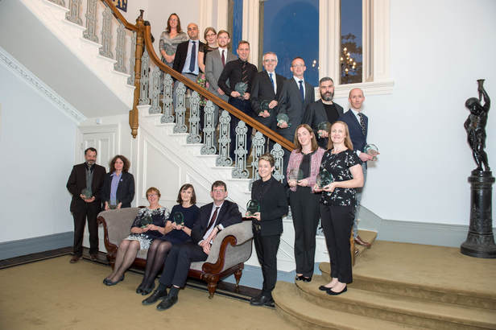

Currently, I am Full Professor at the Institute of Sociology at RWTH Aachen University and I am also Visiting Full Professor at University College Dublin. Previously, I was Professor at the School of Sociology at University College Dublin, Ireland and was Visiting Professor at the Institute of Sociology at University of Zurich and Simon Visiting Professor at the University of Manchester. Before, I was Assistant Professor and Deputy Director at the Institute for Analytical Sociology at Linköping University, Marie Curie Fellow at the Institute for Futures Studies and Stockholm University and post-doctoral fellow at ETH Zurich and Université de Montréal. I studied Computer Science and Sociology at the University of Trier (Diplom), University of Cambridge (MPhil) and the University of Oxford (DPhil).
I am interested in (1) how social structures limit individuals’ view of the world; (2) how embeddedment in social context affects individuals’ behavior and relational choices; and (3) how combined relational patterns lead to broader macro-level outcomes (e.g. cooperation, crime, segregation). By addressing these issues in very different empirical settings, my work reaches across disciplinary boundaries and demonstrates the originality of the approach I propose. Lately, I have been developing a new software suite for doing network analysis using Stata.
European Social Networks Conference 2019, Zurich, Poster Slam
Together with PhD students at University College Dublin I am hosting the podcast "Dublin Calling", where we interview famous sociologists and talk about their research, but also talk more generally about their academic career and the struggles of PhD students and early career faculty.
In 2017 I received the Teaching Excellence Award at University College Dublin and was one of five individuals selected for this award for the whole university. Below is the citation I received with my award:
Dr Thomas Grund was appointed Assistant Professor in Sociology at UCD in 2015. He teaches modules on research methods, social networks and social dynamics at the undergraduate and graduate level. Thomas employs technology enhanced learning strategies to engage and inspire his students in large lecturers – these include thought- provoking video trailers to introduce a new topic, in-class interaction through live-surveys, game-based learning and live experiments involving students.
In nominating Thomas for an award, students reflected on the impact of his innovative teaching strategies on their learning. His dynamic teaching style is engaging and ensures lively interaction between teacher and students throughout every lecture. His ‘blended’ approach encourages students to engage with readings, recorded lectures and other learning materials both before and after his lecturers, which hugely enriches their overall learning experience.
Thomas is influential within his school and college, acting as a role model and providing practical support to colleagues wishing to incorporate tools and technologies to enhance their teaching practice. Thomas’s research interests are social and criminal networks. Congratulations to Thomas on this Teaching Excellence Award

At several occasions my work has been reported by the press:
Die Zeit, Wall Street Journal, ScienceDaily, ScienceNews, The Guardian, Irish Examiner, The Voice, The National
tgrund [at] soziologie.rwth-aachen.de